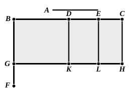
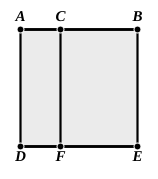
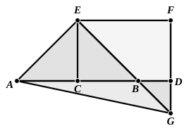
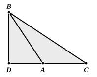
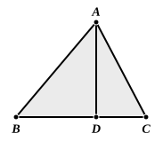

BOOK II. PROPOSITIONS.¶

If there be two straight lines, and one of them be cut into any number of segments whatever, the rectangle contained by the two straight lines is equal to the rectangles contained by the uncut straight line and each of the segments.

If a straight line be cut at random, the rectangle contained by the whole and both of the segments is equal to the square on the whole.
If a straight line be bisected and a straight line be added to it in a straight line, the rectangle contained by the whole with the added straight line and the added straight line together with the square on the half is equal to the square on the straight line made up of the half and the added straight line.

If a straight line be bisected, and a straight line be added to it in a straight line, the square on the whole with the added straight line and the square on the added straight line both together are double of the square on the half and of the square described on the straight line made up of the half and the added straight line as on one straight line.

In obtuse-angled triangles the square on the side subtending the obtuse angle is greater than the squares on the sides con- taining the obtuse angle by twice the rectangle contained by one of the sides about the obtuse angle, namely that on which the

In acute-angled triangles the square on the side subtending the acute angle is less than the squares on the sides containing the acute angle by twice the rectangle contained by one of the sides about the acute angle, namely that on which the per- pendicular falls, and the straight line cut off within by the perpendicular towards the acute angle.